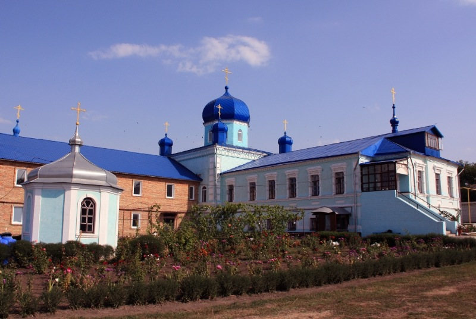
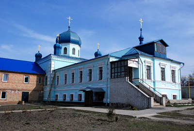
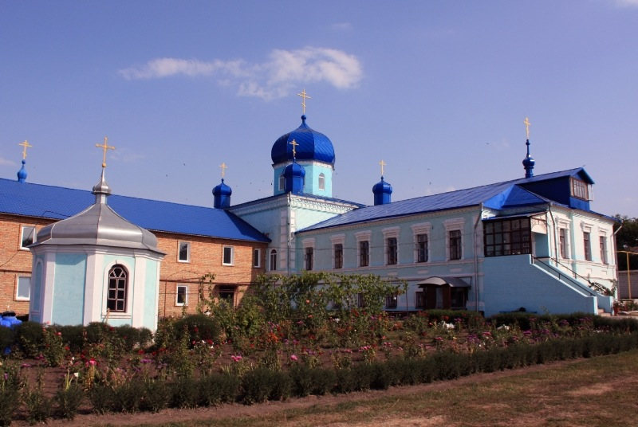
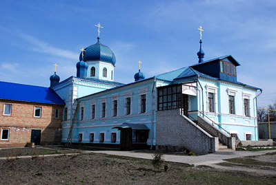

Пам'ятки України
Україна у складі Російської та Австрійської імперії
19 століттяЗнаменський монастир
1902 р.
Засновник:
Василенко Катерина Павлівна
Місце розташування:
Україна, Вербівське
Вірування:
православ'я
 


Цікаві факти:
У другій половині XIX сторіччя вдова надвірного радника, потомствена дворянка Василенко Катерина Павлівна в своєму маєтку на березі річки Роставіці побудувала Свято-покровський храм. Після відвідин Єрусалиму вона вирішила залишити мирське життя і на свої кошти побудувати жіночий монастир. На початку 80-х років XIX століття вона звернулася в Екатерінославськую духовну Консисторію з проханням, про установу на землі, що належить її, при хуторі Розгульному Олександрівського повіту жіночої общини в ім'я ікони Знамення Божій Матері. На це було дано дозвіл імператора Миколи II.
Через три роки в 1910 році вона була удостоєна високої нагороди — наперсного хреста з прикрасами.Існує переказ, про те, що відразу після влаштувало обителі до ігумені Єлизавети прийшло близько ста дівчат, які бажали стати чорницями. Це ще більш укріпило серце настоятельки в її намірі облаштувати величний монастир.